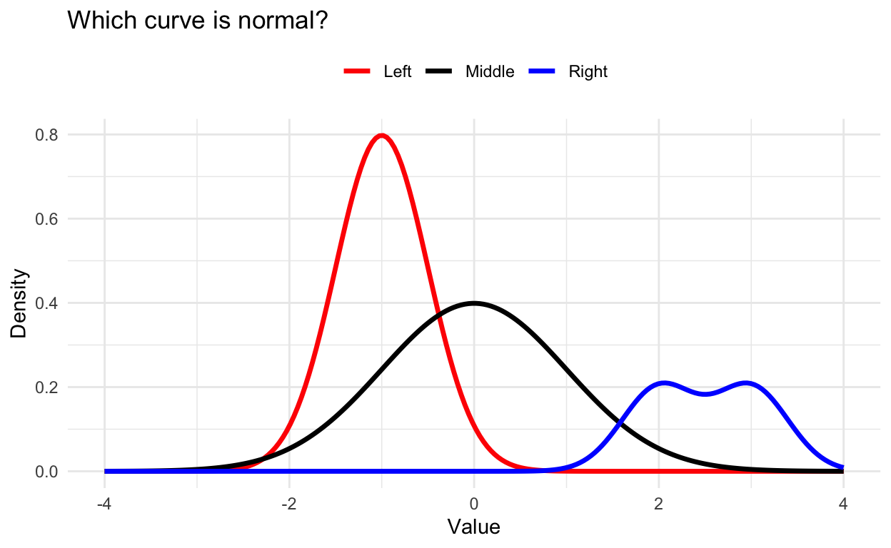
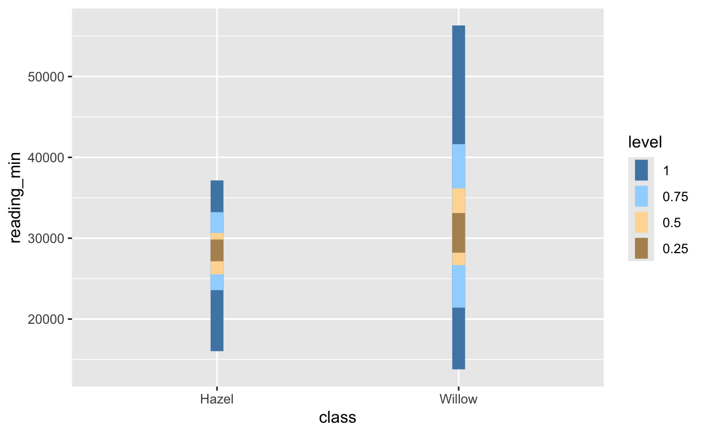

The Origins of Bias
Knowledge Check | 1
Knowledge Check | 2
Knowledge Check | 3
Knowledge Check | 4
Knowledge Check | 5
Linearity
Knowledge Check | 1
Knowledge Check | 2
Knowledge Check | 3
Independence
Knowledge Check | 1
Knowledge Check | 2
Knowledge Check | 3
Normality
Knowledge Check | 1
Knowledge Check | 2

Knowledge Check | 3
Normality
Coding Practice | 1a
You are a public health analyst interested in the distribution of
life expectancies across UK regions. Use the hie_2021 to
investigate this.
In particular, we want to know whether the pattern is close to
normal, or whether there are surprising outliers? This would matter for
fair comparisons and further analysis. Perform a Shapiro-Wilk test using
the variable life_expectancy.
shapiro.test()# Use shapiro.test() on the life_expectancy column.shapiro.test(hie_2021$life_expectancy)Coding Practice | 1b
Coding Practice | 2a
European researchers are examining perceived work-life balance in the
eqls_country_2011 dataset. Before further analysis, it’s
crucial to know: Does the variable wlbc (work-life-balance)
follow a normal distribution?
Use the built-in function from the r4np,
i.e. ntest(), to check normality.
eqls_country_2011 |> # Try ntest() with the 'wlbc' column.eqls_country_2011 |> ntest(wlbc)Coding Practice | 2b
Coding Practice | 3a
Environmental psychologists are investigating whether reported
happiness (wb_happy) is normally distributed across UK
regions before continuing with their data analysis using the
pplnat dataset. Perform a normality test for each
region in the pplnat dataset. Make use of th
ehandy ntest_by() function from the r4np
package.
# Use ntest_by() to check normality of wb_happy by region.
pplnat |> # Try ntest_by() with pplnat, wb_happy, and region as arguments.pplnat |> ntest_by(wb_happy, region)Coding Practice | 3b
Coding Practice | 4a
You’re consulting on an international health project and you
investigate alcohol consumption using the alcohol_2019
dataset. Before you begin your analysis you check for sources of bias.
You first look at consumption across countries and check
whether the data is approximately normal, or do some countries stand
out? Instead of performa a statistical test, you decide to visualise
your data with ggplot() using a
geom_histogram(bins = 30).
# Plot a histogram of alcohol consumption using ggplot2
alcohol_2019 |> # Use ggplot2 with geom_histogram() for the consumption variable.alcohol_2019 |>
ggplot(aes(x = consumption)) +
geom_histogram(bins = 30)Coding Practice | 4b
Coding Practice | 4c
Homogeneity of Variance
Knowledge Check | 1
Knowledge Check | 2
Knowledge Check | 3

Coding Practice | 1a
You are evaluating mental health data from the hie_2021
dataframe. Calculate the standard deviation (SD) of
feelings_of_anxiety across all UK regions. What does this
tell us about the spread of anxiety scores?
Hint: Use ?hie_2021 to find out more about this
variable, especially the length of the measuring scale used. This is
important to judge the results and understand what counts as a large
standard deviation and what does not.
# Calculate the standard deviation of feelings_of_anxiety across all regions# Use the sd() function on the variable, with na.rm = TRUE to ignore missing data.sd(hie_2021$feelings_of_anxiety, na.rm = TRUE)Coding Practice | 1b
Coding Practice | 2a
Researchers want to summarise how much wellbeing
(wb_satisfied) varies across the regions in the
pplnat dataset. Compute the interquartile range (IQR) and
interpret what it tells us about differences in satisfaction with
nature.
Remember, wb_satisfied is measured on a scale from 1-10,
i.e. 10 implies very satisfied. You can check the scales using
?pplant.
# Compute the IQR for wb_satisfied# Use the IQR() function with na.rm = TRUE for missing values.IQR(pplnat$wb_satisfied, na.rm = TRUE)Coding Practice | 2b
Coding Practice | 3a
A workplace psychologist is testing whether productivity varies more
in remote work versus office-based work. Use the
work_setting_prod dataset, which contains two variables,
i.e. productivity and work_setting (“Remote”
or “Office”). Run a Levene’s test to check if the variance is similar in
both settings.
# Use car::leveneTest() to test equality of variances# Use car::leveneTest(response ~ group, data = ...) or
# Use car::leveneTest(data$variable ~ data$variable)
# Both are valid ways to use the leveneTest() function.car::leveneTest(work_setting_prod$productivity ~ work_setting_prod$work_setting)Coding Practice | 3b
Outliers
Knowledge Check | 1
Knowledge Check | 2
Knowledge Check | 3
Knowledge Check | 4
Knowledge Check | 5
Coding Practice | 1a
You are analysing the hie_2021 data on physical activity
across regions. Use a boxplot to visualise the distribution and spot any
potential outliers in physical_activity. Plot the variable
onto the y-axis.
# Create a boxplot of physical_activity# Use ggplot2 and geom_boxplot() for the physical_activity variable.hie_2021 |>
ggplot(aes(y = physical_activity)) +
geom_boxplot()Coding Practice | 1b
Coding Practice | 2a
Suppose you are cleaning the eqls_2011 data for further
analysis and want to exclude outliers from work_hrs using
the IQR rule. Outliers are values outside 1.5×IQR above the upper
quartile or below the lower quartile. Filter out those cases and create
a cleaned dataset called eqls_2011_no_outliers. Complete
the code below.
# Filter work_hrs using the IQR rule
q1 <-
q3 <-
iqr <- IQR()
lower <- q1 - 1.5 * iqr
upper <- q3 + 1.5 * iqr
eqls_2011_no_outliers <-
eqls_2011 |>
filter()# Calculate Q1, Q3, and IQR first, then filter to keep only values within the bounds.q1 <- quantile(eqls_2011$work_hrs, 0.25, na.rm = TRUE)
q3 <- quantile(eqls_2011$work_hrs, 0.75, na.rm = TRUE)
iqr <- IQR(eqls_2011$work_hrs, na.rm = TRUE)
lower <- q1 - 1.5 * iqr
upper <- q3 + 1.5 * iqr
eqls_2011_no_outliers <- eqls_2011 |>
filter(work_hrs >= lower, work_hrs <= upper)Coding Practice | 2b
Coding Practice | 3a
A social scientist wants to see how the mean of a sample can change
after removing outliers. You have a dataset called
commute_time with a variable minutes
representing the daily commute time of city workers. Calculate the mean
before and after removing outliers (using the IQR rule). What do you
notice?
# Calculate the mean before and after removing outliers# Calculate the mean, then remove outliers with the IQR rule, then calculate mean again.# Here is one way you could approach this task. This code is still incomplete, though.
mean_before <- mean()
q1 <- quantile()
q3 <- quantile()
iqr <- IQR()
lower <- q1 - 1.5 * iqr
upper <- q3 + 1.5 * iqr
mean_after <-
commute_time |>
filter() |>
summarise(mean = )mean_before <- mean(commute_time$minutes)
q1 <- quantile(commute_time$minutes, 0.25)
q3 <- quantile(commute_time$minutes, 0.75)
iqr <- IQR(commute_time$minutes)
lower <- q1 - 1.5 * iqr
upper <- q3 + 1.5 * iqr
mean_after <-
commute_time |>
filter(minutes >= lower, minutes <= upper) |>
summarise(mean = mean(minutes))
mean_before
mean_afterCoding Practice | 3b
Coding Practice | 4a
Health researchers want to see if certain countries stand out in
terms of alcohol consumption. Use a boxplot to visualise
consumption in the alcohol_2019 dataset and
identify possible outliers. Plot consumption onto the
y-axis.
# Use geom_boxplot() for the y = consumption variable.alcohol_2019 |>
ggplot(aes(y = consumption)) +
geom_boxplot()Coding Practice | 4b
Case Study | Workplace Stress and Flexible Hours
You are part of a team of social scientists who study how flexible working hours affect employee wellbeing. You surveyed employees at several companies, asking about their perceived workplace stress (on a scale from 1 to 10 where 10 implies high levels of workplace stress), whether they have flexible working hours (Yes/No), and their age group. The team suspects that some employees may have reported extreme stress values that could be outliers and wants to assess distributions, check for outliers, and prepare summary tables and a presentable poster for the senior faculty management team.
Step 1a | Exploring the dataset
Start by inspecting the structure of the new dataset
stress_flex. What type of variables are included?
# Glimpse the structure# Use glimpse(stress_flex) to view the dataset structure.glimpse(stress_flex)Step 1b | Exploring the dataset
Step 2a | Visualising stress scores
Let’s visualise the distribution of reported workplace stress. Create
a boxplot of the stress variable. Plot the variable onto
the y-axis.
# Create a boxplot for stress# Use ggplot2 and geom_boxplot().stress_flex |>
ggplot(aes(y = stress)) +
geom_boxplot()Step 2b | Visualising stress scores
Step 3a | Removing outliers from stress scores
Use the IQR rule to identify and remove outliers in the
stress variable. Create a cleaned dataset called
stress_flex_clean. Lastly, create another boxplot and see
whether this time all outliers were successfully removed. Plot the
variable onto the y-axis. Complete the code below.
# Remove outliers using the IQR rule
q1 <- quantile()
q3 <- quantile()
iqr <- IQR()
lower <- q1 - 1.5 * iqr
upper <- q3 + 1.5 * iqr
stress_flex_clean <- stress_flex |>
filter()
stress_flex_clean |>
ggplot(aes()) +
geom_boxplot()# Calculate Q1, Q3, and IQR for stress, then filter for values within 1.5xIQR of Q1 and Q3.q1 <- quantile(stress_flex$stress, 0.25)
q3 <- quantile(stress_flex$stress, 0.75)
iqr <- IQR(stress_flex$stress)
lower <- q1 - 1.5 * iqr
upper <- q3 + 1.5 * iqr
stress_flex_clean <- stress_flex |>
filter(stress >= lower, stress <= upper)
stress_flex_clean |>
ggplot(aes(y = stress)) +
geom_boxplot()Step 3b | Removing outliers from stress scores
Step 4a | Checking normality of stress scores
Now let’s check whether the stress variable is
approximately normally distributed, using a histogram with
bins = 15. Use the uncleaned stress_flex
dataset. What does the shape suggest?
Plot stress onto the x-axis.
# Plot a histogram of stress# Use ggplot2 and geom_histogram().stress_flex |>
ggplot(aes(x = stress)) +
geom_histogram(bins = 15)Step 4b | Checking normality of stress scores
Step 5a | Summarising mean stress by flexible working status
Calculate the mean stress level for each group
(flexible, Yes/No) in the cleaned dataset. What does this
show about stress and flexible hours?
# Calculate mean stress by flexible group# Use group_by() and summarise() on the cleaned dataset.stress_flex_clean |>
group_by(flexible) |>
summarise(mean_stress = mean(stress))Step 5b | Summarising mean stress by flexible working status
Step 6a | Creating a presentation-ready plot
Now that we obtained all our insights, let’s create a bar plot to clearly compare mean stress by group, making it suitable for presentation. Be sure to add axis labels and a title!
# Make a bar plot of mean stress by flexible group# Use group_by() and summary() to compue the statistics. Then use ggplot() and geom_col() to plot the results.stress_flex_clean |>
group_by(flexible) |>
summarise(mean_stress = mean(stress)) |>
ggplot(aes(x = flexible, y = mean_stress)) +
geom_col() +
labs(title = "Mean Stress by Flexible Working Status",
x = "Flexible Working Hours",
y = "Mean Stress Score (1-10)")Step 6b | Creating a presentation-ready plot